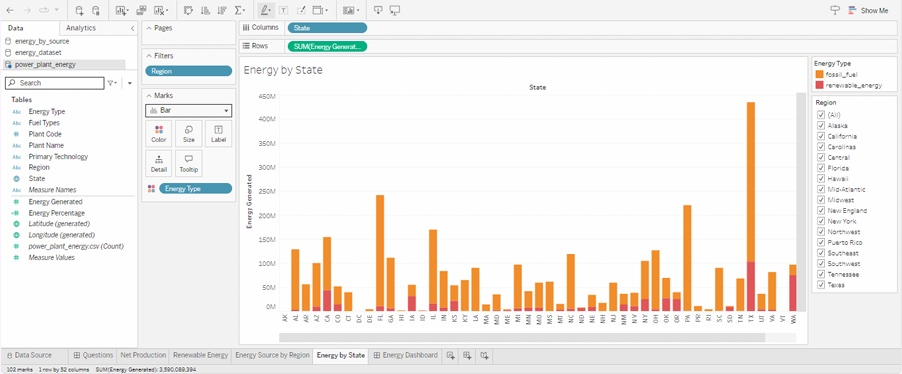
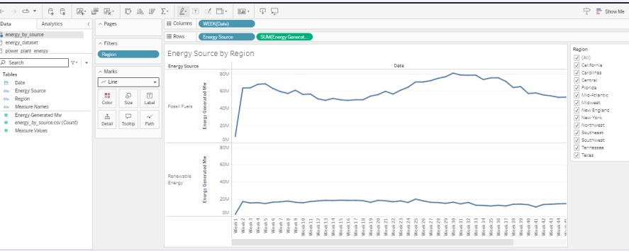
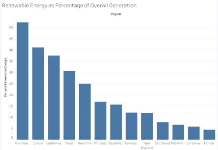
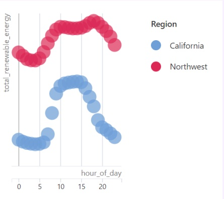

Data & Analytics · Feb 2024 – Mar 2024 · Completed
Intel Data Center
Queried and visualized U.S. energy generation data to show where renewable supply is strongest — supporting data center site planning decisions.
Overview
Stakeholders needed a geographic view of fossil vs renewable generation. I built SQL-backed Tableau dashboards covering energy by state, renewable share by region, source trends, and hourly renewable patterns.
What I built
- SQL queries over generation datasets for regional comparisons
- Tableau views: stacked state bars, weekly fossil/renewable trends, renewable share, hourly California vs Northwest scatter
- Narrative framing for investment / site-planning conversations
Stack
- SQL
- SQLPad
- Tableau
Work samples




Outcome
Delivered stakeholder-ready dashboards that made renewable potential and generation mix readable at a glance for planning discussions.